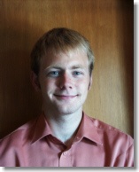

| [Word95] [PostScript] |
Curriculum Vitae |
|
| [Word95] [PostScript] |
Curriculum Vitae |
|

Name:
Address:
Phone:
E-mail:
Homepage:
Date of birth:
Citizenship:
Martial status:
Dirk Bucka-Lassen
9 Francis Street
Brookline, MA 02446
USA
(+1) 617-739-0869
dirk@bucka-lassen.dk
http://www.bucka-lassen.dk/dirk/
June 7th. 1973
Danish and Swiss
Single
Programming languages: Java, C, C++, Perl, Smalltalk, Beta, Scheme, Self, ML, Gofer, Assembler, BASIC, Lingo, SQL, HTML. Systems & Technologies: CGI, PHP, ASP, Oracle, DB2, Netscape Mail Server, SSH, Director, video/audio streaming, CPN. Platforms: DOS, Windows (95/98 & NT), UNIX and Linux. Languages: Fluent in Danish (native), German (native) and English.
University of Aarhus, Denmark (September 1992 - January 1999)
Masters degree in computer science with thesis on spatial hypermedia, collaboration and open component-based architectures.
Minor in economics.Publications
- Bucka-Lassen, Dirk and Pedersen, Claus Aagaard and Reinert, Olav. Cooperative Authoring using Open Spatial Hypermedia. M.Sc. thesis, Aarhus University, Denmark, January 1999.
- Bucka-Lassen, Dirk and Pedersen, Claus Aagaard and Reinert, Olav and Nürnberg, Peter J. CAOS: A Collaborative and Open Spatial Structure Service Component with Incremental Spatial Parsing. Proceedings of ACM Hypertext '99, pp. 49-50.
Conferences
Hypertext '99, Darmstadt, Germany (February 1999)
Presentation of the article CAOS: A Collaborative and Open Spatial Structure Service Component with Incremental Spatial Parsing, demonstration of the CAOS system and participation in the workshop on Structural Computing.
Programmer & System Administrator (January 1998 - September 1998)
Tele Danmark Internet, Technical Dep., Aarhus, Denmark
Served as programmer and system administrator on internal projects.Programmer & Internet Consultant (March 1996 - January 1998)
Tele Danmark Internet, Project Dep., Aarhus, Denmark
Served as CGI-programmer and internet consultant on both internal and external projects.Programmer (December 1995 - March 1996)
Danadata, Aarhus, Denmark
Served as a CGI-programmer.
Military service (April 1999 - June 1999)
The Danish National Rescue Corps
Elected as spokesman. Graduated as certified fire fighter, including first aid.Spokesman's course (April 1999)
Bernstorff Castle, The Danish National Rescue Corps
Education in problem solving.Entrepeneur's course (Autumn 1998)
Center for Business Development, DenmarkTime management course (Autumn 1993)
Time Manager International, DenmarkWaiter & Sales Clerk (Summer 1993)
Kommandørgården, Rømø, DenmarkDriver & Sales Clerk (July 1991 - July 1992)
Kvickly Supermarket, Tønder, Denmark
German Academic High School, Aabenraa, Denmark (August 1988 - June 1991)
Danish and German diploma in mathematics and physics.Ludwig Andresen School, Tønder, Denmark (August 1986 - June 1988)
German Private School, Højer, Denmark (August 1979 - June 1986)
Formula 3 driver's license (September 1998)
Scandinavian Formula School, Knutstorp, Sweden
3 days education in Formula Ford cars.6 months USA-tour (March 1995 - August 1995)
Travelling around the USA on motorcycle.
Hobbies include inline-skating, skiing, snowboarding, scuba-diving, photography, traveling, motorcycling and racing.
Personal and professional references are furnished on request.